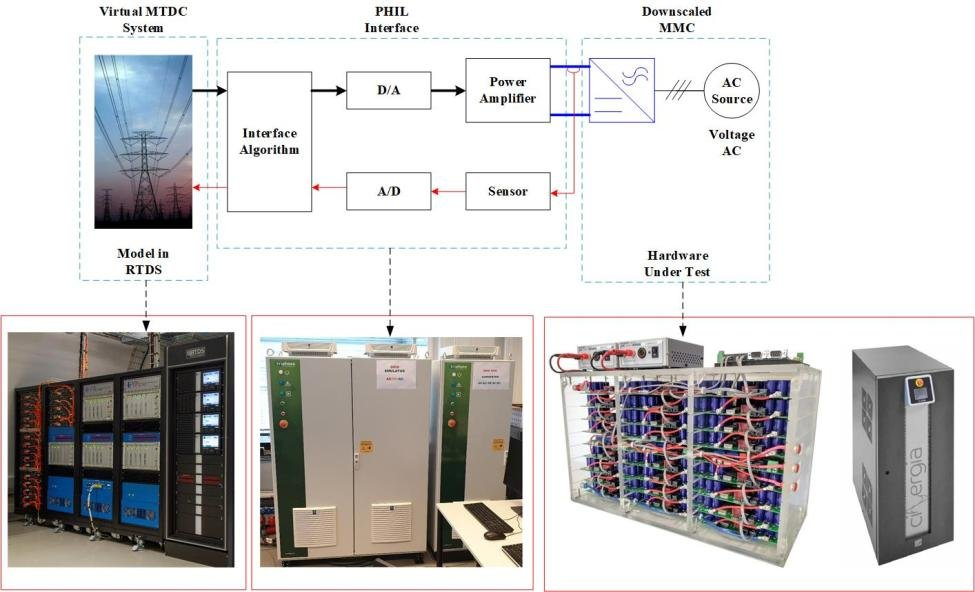
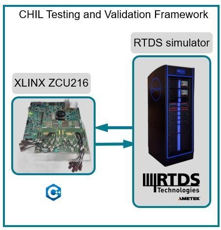
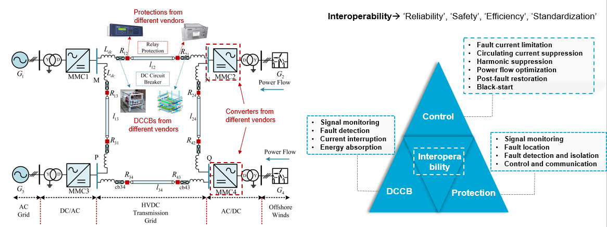

HE · WP co-lead
InterOPERA
Derisking multi-vendor multi-terminal HVDC with grid-forming capability.
interopera.eu →Team site for Control of HVDC/AC Power Systems — from adaptive converter control to open simulation frameworks and lab-validated protection.

Official consortium links where public websites exist. Completed projects appear in the full build.
Derisking multi-vendor multi-terminal HVDC with grid-forming capability.
interopera.eu →Doctoral network on PE-asset interoperability by openness.
inter-open.eu →Open tools against harmonics and converter-driven instability.
mitigate-harm.eu →Harmonic stability assessment framework for PE-penetrated systems.
cresym.eu/harmony →DC protection, security, control and optimisation demonstrators.
prosecco-project.be →Adaptive MPC for microsecond-scale PE converter control.
TU Delft page →
From the Interoperability Program — open software and RTDS libraries.
